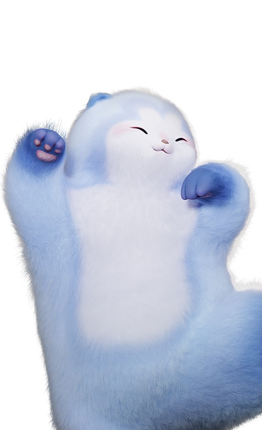
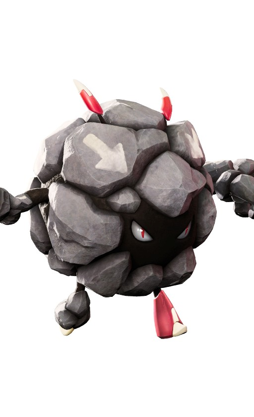
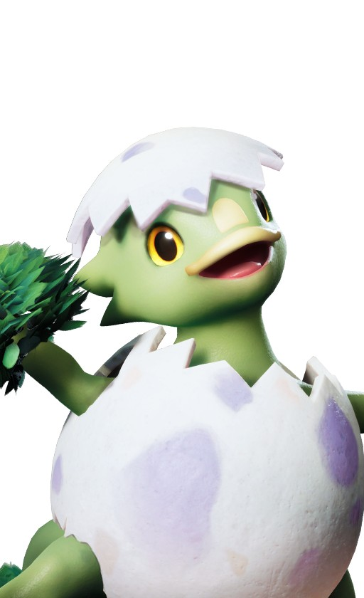
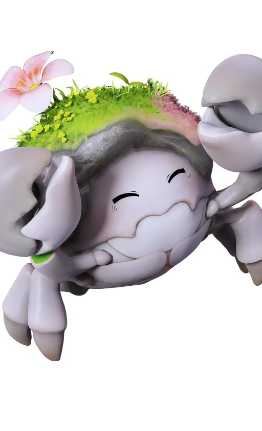

애니모 이건 예술이야 낙서가 아니라고 정답, 둔둔달 록볼볼 라라에그 싹크랩 위치까지
애니모 여기저기 돌아다니다가 아스트라에서 그림 그리는 NPC를 보신 적 있으실 거예요. 말을 걸어보면 대뜸 러프 스케치 한 장을 보여주면서 이거랑 똑같이 생긴 애니모를 데려와 달라고 하는 서브 퀘스트인데, 이름이 「이건 예술이야! 낙서가 아니라고」거든요. 막상 한국어로 검색해봐도 딱 떨어지는 정리가 안 보이길래 해외 공략까지 뒤져가며 하나하나 맞춰봤는데, 자료를 다 모아놓고 보니 처음 볼 때보다는 훨씬 명확해지더라고요. 이 퀘스트 검색해서 들어오시는 분들이 은근히 많길래, 4단계 정답 애니모부터 잡는 곳, 그리고 다들 한 번씩 막히는 완료 조건까지 오늘 한 번에 정리해드릴게요.
이건 예술이야, 낙서가 아니라고가 무슨 퀘스트냐면
이 퀘스트는 아스트라의 화가 NPC(영문 표기 Shulala)가 러프 스케치를 보여주고, 그 그림과 똑같은 애니모를 데려오면 다음 단계가 열리는 4연작인데요, NPC는 시작 지점(영문 표기 Horizon Square) 체크포인트 근처 이젤 옆에 서 있어요. 대화를 걸면 완성된 그림이 아니라 대충 그린 러프 스케치를 보여주면서 «이거랑 똑같이 생긴 애니모를 데려와 달라»고 부탁하는 식이라, 처음 보면 무슨 소린가 싶으실 수도 있어요. 4단계 전부 이런 식으로 진행되는데, 그림 속 주인공만 매번 바뀐다고 보시면 됩니다.
이 자리에 화가 NPC 스크린샷을 넣어주세요.
화가 NPC나 시작 지점처럼 한국어 정식 명칭이 아직 확인 안 된 이름은 영문을 병기할게요. 정확한 명칭은 인게임에서 직접 확인해보시는 게 제일 정확하고요, 단계 사이 선행 조건이나 대기 시간은 지금까지 확인된 공략 어디에도 없더라고요. 그래서 한 단계를 끝내면 텀 없이 바로 다음 단계가 열리는 구조로 보시면 됩니다. 덕분에 중간에 며칠씩 기다리거나 다른 조건을 채워야 하나 걱정하지 않으셔도 돼서, 그 점은 오히려 마음 편한 부분이에요.
정답부터 표로 딱 정리해드릴게요
결론부터 말씀드리면 정답은 둔둔달·록볼볼·라라에그·싹크랩, 이 네 마리예요.
지역별 레벨대가 보이는 월드맵이에요.
| 단계 | 애니모 | 도감번호 | 원소 | 포지션 | 성장 단계 | 잡는 곳 | 지역 레벨대 |
|---|---|---|---|---|---|---|---|
| 1 | 둔둔달 | NO.052 | 물 | 격파 | 성숙기 | 고래첨벙 해안 | LV.47~48 |
| 2 | 록볼볼 | NO.058 | 땅 | 서포터 | 성장기 | 청석 대지 | LV.48~50 |
| 3 | 라라에그 | NO.036 | 풀 | 격파 | 유년기 | 로즈타워 숲 | LV.49~51 |
| 4 | 싹크랩 | NO.023 | 땅·풀 | 격파 | 유년기 | 구름 초원 등 4곳 | LV.41~58 |
레벨대는 2026.09.20 기준 인게임 월드맵 표기고, 이 글도 정식 출시(2026.09.16) 이후 기준이에요. 지역 고정값인지 계정 진행도 연동인지는 아직 확실치 않으니 참고만 해주시면 되고요, 표의 「잡는 곳」란은 네 단계 다 그 지역 야생에서 실제로 마주칠 수 있다는 뜻이라 그대로 믿고 가셔도 돼요. 다만 1·2단계 둔둔달·록볼볼은 같은 지역에 훨씬 강한 엘리트 개체도 따로 돌아다니고 있어서, 필드에서 둘 다 보이면 괜히 헷갈리실 수 있거든요. 이 부분은 두 단계를 소개해드린 다음 따로 한 번 더 짚어드릴게요.
1단계 둔둔달 - 고래첨벙 해안 쪽이에요
1단계 정답은 둔둔달이에요. 성숙기 개체가 고래첨벙 해안(LV.47~48)에 서식하고 있어서, 필드를 돌아다니다 보면 자연스럽게 마주칠 수 있어요. 수줍달→보글달을 거쳐 크는 계열이라 도감에서 만나면 어릴 때 모습과는 꽤 다르게 느껴지실 텐데, 잡을 땐 이 성숙기 형태 그대로 데려가시면 돼요. 원소는 물 속성에 포지션은 격파라, 상성표는 아래에서 한 번에 정리해드릴게요.

1단계 정답, 둔둔달이에요.
이미지 출처: 애니모 공식 위키 도감 wiki.aniimo.com
필드에 나가면 다른 물 속성 개체들 사이에 둔둔달도 함께 섞여 있어요. 다만 얼마나 자주 나오는지까지 적어둔 자료는 없어서, 한 바퀴 돌아 안 보이면 조금 더 찾아보셔야 할 수도 있어요. 참고로 같은 지역에는 훨씬 강한 엘리트 개체도 따로 돌아다니고 있어요. 이 엘리트는 포획용이 아니라 예전부터 키우던 보글달을 진화시킬 때 필요한 조건이라, 목적이 다르다는 것만 기억해두시면 됩니다. 자세한 이야기는 록볼볼까지 마저 안내해드리고 바로 이어서 정리해드릴게요.
2단계 록볼볼 - 청석 대지, 지도 이름 때문에 헷갈리기 쉬워요
2단계는 록볼볼을 잡으면 되는데, 서식지 이름 때문에 지도에서 한 번 헤매실 수 있어요. 인게임에서 확인되는 서식지는 청석 대지(LV.48~50)인데, 해외 공략 글들은 여길 'Berylline Vale'라고 적어 놔서 처음엔 다른 곳인가 싶으실 거예요. 이름 하나 때문에 지역을 통째로 못 찾고 헤매는 경우가 은근히 많더라고요. 두 이름의 관계는 바로 아래에서 짚어드릴게요.

2단계 정답, 록볼볼이에요.
이미지 출처: 애니모 공식 위키 도감 wiki.aniimo.com
공식 16개 지역 목록엔 'Berylline Vale'라는 이름이 아예 없고, 인게임 지도의 청석 대지와 겹치는 정황이 강해서 같은 곳으로 보여요. 그러니 이 이름 때문에 지도를 못 찾고 헤매셨다면 그냥 청석 대지 쪽으로 가시면 되는데, 다행히 이 지역도 록볼볼이 야생에 실제로 서식하고 있어서 필드를 돌아다니다 보면 자연스럽게 마주치실 수 있어요. 데굴굴에서 자라는 계열이라 성장기 형태로 만나게 되는데, 이 상태 그대로 데려가시면 되고요. 참고로 여기도 둔둔달 쪽과 마찬가지로 엘리트 개체가 따로 돌아다니는데, 이건 나중에 진화 쪽 얘기를 할 때 다시 짚어드릴게요.
참, 이미 보글달·데굴굴 키우고 계셨다면 조건이 하나 더 있어요
결론부터 말씀드리면, 1·2단계는 그냥 필드에서 새로 잡으실 거면 지금까지 설명해드린 대로만 하시면 충분해요. 다만 예전부터 키우던 보글달이나 데굴굴을 진화시켜서 대신 쓰고 싶으시다면 얘기가 조금 달라지는데, 그 이유를 짚어드릴게요. 고래첨벙 해안이랑 청석 대지엔 둔둔달·록볼볼 같은 일반 개체 말고도 훨씬 세게 세팅된 엘리트(Alpha) 개체가 따로 돌아다니고 있거든요. 이 엘리트를 처치하는 게 바로 보글달→둔둔달, 데굴굴→록볼볼 진화의 조건이라, 진화 쪽을 택하면 결국 한 번은 이 엘리트와 맞붙어야 하는 구조예요.
정리하면 야생 포획(퀘스트용)과 엘리트 처치(진화용)는 서로 다른 목적의 별개 경로지, 하나가 다른 하나를 대신하는 관계가 아니에요. 둘 다 애니모 39레벨을 채운 상태여야 하고, 진화 재료로는 둔둔달 쪽이 물결석, 록볼볼 쪽이 패시브 [기묘한 암석]과 대지석을 요구하는데, 정확한 개수는 자료마다 조금씩 갈려서 여기선 숫자는 비워둘게요. 그리고 이 엘리트 개체를 잡아서 바로 포획할 수 있는 건지, 처치만 하고 진화로만 얻어지는 건지도 아직 인게임으로 확인이 안 됐으니 이 부분은 직접 확인해보시는 게 안전해요. 이번 퀘스트만 빠르게 깨실 생각이면 굳이 이 엘리트를 찾아다니실 필요 없이, 위에서 안내해드린 대로 그냥 필드에서 잡으시면 충분합니다.
3단계 라라에그 - 무조건 유년기로 잡아야 해요
3단계는 로즈타워 숲(LV.49~51)에 사는 라라에그 차례인데, 여기서부터는 «어떤 형태로 잡느냐»가 진짜 중요해져요. 이 지역엔 라라에그가 기본형(유년기)으로 실제 서식하고 있어서 필드에서 바로 포획하면 되는데, 문제는 잡는 게 아니라 그다음이거든요. 앞의 두 단계처럼 엘리트 개체를 신경 쓸 필요는 없고, 대신 잡은 상태를 그대로 유지하는 게 관건이에요. 무슨 뜻인지는 바로 아래에서 설명해드릴게요.

3단계 정답, 라라에그예요. 꼭 이 유년기 모습 그대로 잡아야 해요.
이미지 출처: 애니모 공식 위키 도감 wiki.aniimo.com
여기서 제일 조심할 부분인데요, 라라에그는 반드시 진화 전 유년기 상태여야 인정돼요. 붐테일자드나 썬더자드로 진화시킨 개체는 아무리 도감에 있어도 이 퀘스트 기준으로는 소용이 없어서, 실수로 진화시켰다간 처음부터 다시 잡으셔야 해요. 그러니 라라에그를 잡으면 절대 진화시키지 마시고, 유년기 상태 그대로 화가에게 데려가는 게 제일 안전합니다.
4단계 싹크랩 - 구름 초원이 제일 편해요
서식지가 바다끝 구릉·구름 초원·청석 대지·늑대이빨 능선 이렇게 네 곳이나 되는 싹크랩이 4단계 정답이에요. 3단계 라라에그처럼 이쪽도 야생 스폰이 확실히 확인된 지역들이라 네 곳 중 아무 데서나 잡아도 무방해요. 다만 지역마다 레벨대가 꽤 벌어져 있어서, 편하게 잡고 싶으시면 아래 목록을 참고해서 낮은 쪽부터 가시는 걸 추천드려요.

4단계 정답, 싹크랩이에요.
이미지 출처: 애니모 공식 위키 도감 wiki.aniimo.com
- 구름 초원 — LV.41~43 (네 곳 중 가장 낮아서 실전 추천)
- 늑대이빨 능선 — LV.46~47
- 청석 대지 — LV.48~50
- 바다끝 구릉 — LV.50~58 (레벨대가 제일 높아서 굳이 갈 필요는 없어요)
넷 다 서식지는 확인됐으니 어디서 잡아도 상관없지만, 레벨대가 가장 낮은 구름 초원이 접근하기 편해서 실전에선 이쪽을 추천드려요. 땅·풀 복합 속성이다 보니 약점 원소만 잘 맞추면 무력화도 비교적 수월한 편이에요. 유년기 개체로 표기돼 있으니 라라에그 때처럼 잡은 형태 그대로 데려가시는 게 마음 편하실 거예요.
조우 화면은 나중에 하나씩 채워주세요.
포획만 하면 끝난 줄 알았는데, 그게 아니더라고요
네 마리를 다 잡아도 도감에만 넣어두면 이 퀘스트는 절대 완료되지 않아요. 포획 자체보다 오히려 이 마무리 조건을 놓쳐서 헤매는 분들이 많더라고요. 저도 처음 자료 찾아볼 때 이 부분이 제일 안 보이길래 애먹었는데, 알고 보니 절차 자체는 단순하더라고요. 순서만 정확히 지키면 되니까, 아래 세 단계를 그대로 따라가 보세요.
이 장면이 이 퀘스트의 핵심이에요.
- ① 잡은 애니모를 활성 파티에 편성한다
- ② 소환해서 캐릭터 옆에 데리고 다니는 상태로 만든다
- ③ 그 상태 그대로 화가에게 가서 말을 건다
이 세 가지를 순서대로 해야 다음 단계가 열려요. 대화하는 순간까지 소환이 유지돼야 인식되니, 말 걸기 직전에 한 번 더 확인하는 게 좋아요. 소환이 풀린 줄 모르고 말부터 걸었다가 다시 파티창을 여닫는 분들이 은근히 많더라고요. 이 부분 하나만 신경 쓰시면 나머지는 크게 어렵지 않아요.
잡기 전에 상성부터 체크하고 가세요
네 마리 다 원소가 달라서, 상성 맞는 애니모를 데려가면 훨씬 수월하게 무력화하고 잡을 수 있어요. 무력화 게이지를 얼마나 빨리 깎느냐에 따라 포획 성공률 체감이 꽤 달라지더라고요. 아래 표에 원소별 약점·중립·저항 배율을 정리해뒀으니 참고해보세요. 파티 짜실 때 표를 하나 열어두고 맞춰보시는 것도 추천드려요.
| 애니모(원소) | 약점 1.6배 | 중립 1배 | 저항 0.625배 |
|---|---|---|---|
| 둔둔달(물) | 풀·전기·얼음 | 바람·빛 | 불·땅·물·어둠 |
| 록볼볼(땅) | 풀·물 | 바람·빛·어둠 | 불·전기·땅·얼음 |
| 라라에그(풀) | 불·바람·어둠 | 전기·빛·얼음 | 풀·땅·물 |
| 싹크랩(땅·풀) | 바람·어둠 | 풀·불·물·빛 | 전기·얼음(땅은 0.391배로 더 강하게 버팀) |
표에 있는 약점 원소로 공격하면 상대를 더 빨리 무력화할 수 있어서, 포획 자체도 한결 편해진답니다. 반대로 상성이 안 맞는 애니모로 억지로 밀어붙이면 무력화 게이지가 더디게 깎여서 시간을 꽤 잡아먹거든요. 이 배율은 게임위드(GameWith) 자료를 기준으로 정리한 값이라, 인게임 실측과는 약간 다를 수 있다는 점만 참고해주세요.
보상은 이 정도예요
보상은 단계마다 재화 30개(영문 표기 Glimmer)씩, 총 120개를 모을 수 있어요. 재화 말고도 단계별로 그림 아이템이 하나씩 딸려오는데, 이건 가구가 아니라 «미션 아이템»으로 분류되는 수집형 그림이에요. 아래 표에 단계별 보상을 정리해뒀어요.
| 단계 | 애니모 | 그림 보상(영문 명칭) |
|---|---|---|
| 1 | 둔둔달 | Afternoon of the Blue Furball |
| 2 | 록볼볼 | Roar of the Bouldus |
| 3 | 라라에그 | Pointillist Hatching Melody |
| 4 | 싹크랩 | 자료마다 갈림(아래 참고) |
다만 4단계 싹크랩 보상에 이 그림이 포함되는지는 자료마다 갈려요. 서술형 공략은 재화만 준다고 하고 데이터베이스 자료는 그림도 있다고 하니 확정하긴 어려운데, 재화 30개만큼은 확실히 챙긴다고 보시면 되고요. 그림까지 받으면 덤이라고 생각하시면 마음이 편하실 거예요.
헷갈리기 쉬운 것 두 가지만 짚고 갈게요
「내가 누구게」라는 한정 이벤트(9.16~9.24 등)도 싹크랩을 다루지만 완전히 다른 콘텐츠예요. 카메라로 싹크랩 실루엣을 찍어 맞히는 이벤트라, 이번 퀘스트의 포획→파티→소환→대화와는 전혀 다른 방식이죠. 둘 다 싹크랩이 나오다 보니 커뮤니티 자료를 찾아보면 두 콘텐츠가 한데 뒤섞여 있는 경우가 많더라고요. 어떤 글이 어느 쪽 얘기를 하는 건지 헷갈리기 쉬우니, 제목이나 진행 방식을 먼저 확인하고 참고하시는 게 좋아요.
청석 대지엔 'Alpha 록볼볼'이라는 상시 필드보스도 있는데, 이 둘은 사실 위에서 말씀드린 엘리트 록볼볼과 같은 개체로 보여요. 이번 퀘스트만 놓고 보면 이 엘리트를 굳이 잡으러 다니실 필요는 없는데, 데굴굴을 록볼볼로 진화시킬 생각이시라면 얘기가 달라져서 그때는 이 필드보스를 상대하셔야 하거든요. 그러니까 지금 퀘스트만 깨실 거면 몰라도 되는 이름이지만, 나중에 진화 쪽으로 넘어가면 다시 마주치게 될 이름이라 아예 무시하진 마시고 한 번쯤 기억해두시는 게 좋을 것 같아요. 이름만 보고 «그냥 지나가는 보스겠거니» 넘기면, 나중에 진화 재료를 찾다가 다시 이 자리로 돌아오시게 될 거예요.
자주 묻는 질문
Q. 라라에그를 이미 진화시켜버렸는데 이 퀘스트는 어떻게 하나요?
진화시킨 개체는 인정되지 않으니, 로즈타워 숲에서 유년기 라라에그를 새로 한 마리 더 잡아주세요. 상위 개체가 도감에 있어도 유년기가 별도로 필요해요.
Q. 이 퀘스트를 시작하려면 스토리를 얼마나 진행해야 하나요?
특별한 레벨·스토리 조건은 확인되지 않았어요. 아스트라에 들어갈 수 있으면 바로 말을 걸 수 있는 걸로 보여요.
Q. 둔둔달이나 록볼볼도 라라에그처럼 진화 전 형태여야 하나요?
아니요, 라라에그 같은 '유년기만 인정' 조건은 없어요. 둔둔달은 진화로 만든 성숙기 개체도 인정되고, 록볼볼도 성장기 형태이기만 하면 되는 걸로 보여요.
Q. 애니팟 종류에 따라 포획 확률이 달라지나요?
네, 애니팟마다 포획 배율이 다른 걸로 알려져 있어요. 자세한 배율은 「애니모 포획 확률 애니팟 종류별 배율 8종 총정리」 글에 정리해뒀으니 참고하세요.
Q. 「이건 예술이야! 낙서가 아니라고」랑 「내가 누구게」 이벤트, 아무거나 먼저 해도 되나요?
네, 순서는 상관없어요. 이 퀘스트는 포획→파티→소환→대화, 「내가 누구게」는 사진 촬영이라는 것만 구분해두시면 됩니다.
이건 예술이야 낙서가 아니라고 정리
빠르게 순서만 다시 짚으면, 둔둔달(고래첨벙 해안) → 록볼볼(청석 대지) → 라라에그(로즈타워 숲, 유년기 고정) → 싹크랩(구름 초원 추천) 순으로 필드에서 잡고, 매번 파티 편성+소환 유지 상태로 화가에게 말을 걸면 끝나요. 넷 다 야생 포획이라 절차 자체는 크게 어렵지 않은데, 라라에그만 유년기 고정 조건을 꼭 기억해두시고요. 혹시 둔둔달·록볼볼을 진화로 만들어서 쓰실 계획이라면 위에서 안내해드린 엘리트 개체 조건도 함께 챙겨보세요. 다른 애니모 진화 계열이 궁금하시면 「애니모 헬울프 진화 방법, 늑대의 영혼 얻는 법부터 여정 투사까지」 글도 참고하실 만해요(정리되는 대로 링크 걸어둘게요).
✔ 애니모 같이 보기 좋은 내용
· 애니모 전투 티어표 정리, 1티어 애니모 추천까지 짚어봤어요
· 애니모 캠핑카 생활 티어표 추천, 홈 능력 13종 정리
· 애니모 용어 총정리, 천휘 애니모 획득부터 희귀도 평가 차이부터 선천 후천 어빌리티, 옵시디언까지
참고한 곳
· 애니모 공식 위키 도감 - 둔둔달
· 애니모 공식 위키 도감 - 싹크랩